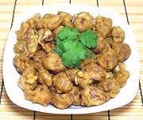

|
Chicken Gizzards, Deep FriedJapan? | ||||
| Serves: Effort: Sched: DoAhead: |
6 app ** 30 min Part |
A very nice appetizer and easy to make - but I have no idea if it has ever been made in Japan. The pattern recipe was from a Korean food expert who learned it from a New York sushi bar. | |||
| Here in California most Japanese sushi bars are now owned and operated by Koreans, not Japanese, but the originator of the recipe says it's definitely not Korean. | |||||
|
1 ----- 1/2 1/3 2 1/2 2 1/8 ----- ar ----- |
# ---- c c T t t --- --- |
Chicken Gizzards (1) -- Batter Starch (2) Flour Sweet Rice Flour (3) Salt Eggs, large Baking Soda ----------- Oil for deep fry -- Serve with Dip (4) |
PREP - (10 min)
|